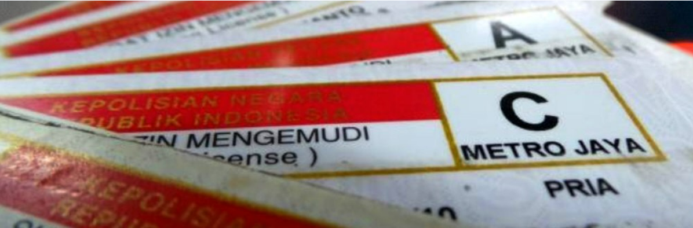
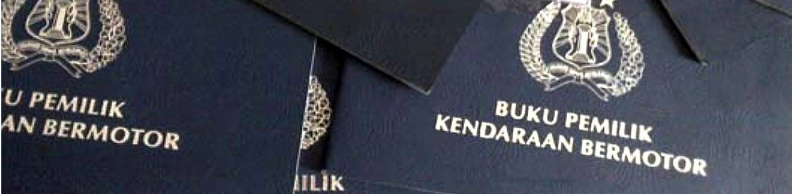
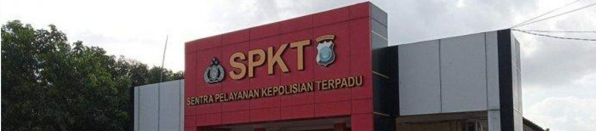
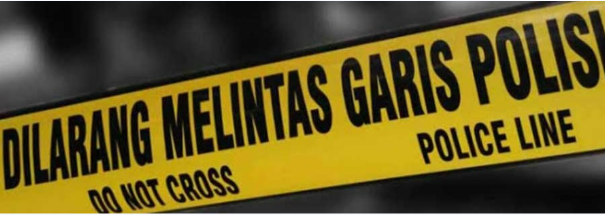
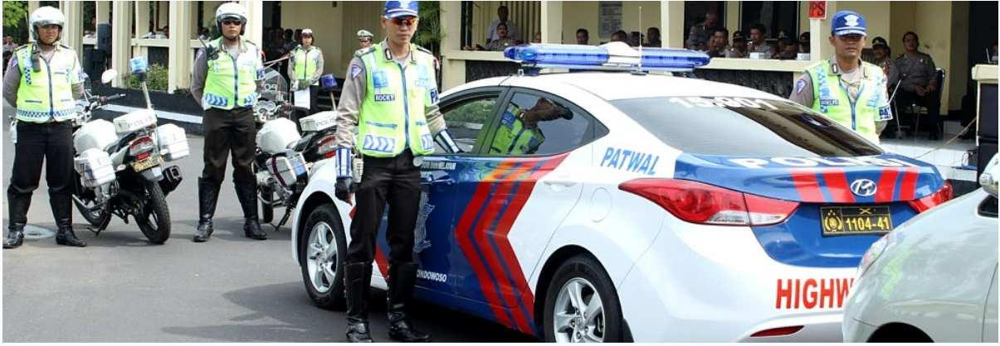

LAYANAN MASYARAKAT
Layanan Call Center Polri 110

Surat Izin Mengemudi
SIM (Surat Izin Mengemudi) adalah bukti registrasi dan identifikasi yang diberikan oleh Polri kepada seseorang yang telah memenuhi persyaratan administrasi, sehat jasmani dan rohani, memahami peraturan lalu lintas dan terampil mengemudikan kendaraan bermotor.

Buku Pemilik Kendaraan Bermotor
BPKB adalah buku yang dikeluarkan/diterbitkan oleh Satuan Lalu Lintas Polri sebagai bukti kepemilikan kendaraan bermotor. BPKB berfungsi sebagai Surat Bukti Kepemilikan Kendaraan Bermotor.

Surat Keterangan Catatan Kepolisian
Surat Keterangan Catatan Kepolisian atau SKCK adalah surat keterangan resmi yang diterbitkan oleh POLRI melalui fungsi Intelkam kepada pemohon/warga masyarakat untuk memenuhi permohonan dari yang bersangkutan berdasarkan hasil penelitian biodata dan catatan Kepolisian.

Izin Keramaian
Izin keramaian dimaksudkan untuk menjaga suasana yang kondusif bagi semua pihak. Kelancaran suatu acara keramaian didukung dengan persiapan pengamanan yang tepat dengan mempertimbangkan risiko, kesiapan personel, dan sarana prasarana.

Sentra Pelayanan Kepolisian Terpadu
SPKT bertugas memberikan pelayanan kepolisian kepada masyarakat, dalam bentuk penerimaan dan penanganan pertama laporan/pengaduan, pelayanan bantuan/pertolongan kepolisian, bersama fungsi terkait mendatangi TKP untuk pengamanan dan olah TKP.

Surat Pemberitahuan Perkembangan Hasil Penyelidikan
Surat Pemberitahuan Perkembangan Hasil Penyidikan (SP2HP) merupakan hak bagi pelapor. Dalam menjamin akuntabilitas dan transparansi, penyidik wajib memberikan SP2HP kepada pihak pelapor secara berkala.

Pengawalan Jalan
Polri memberikan pelayanan pengawalan lalu lintas untuk kelancaran dan keselamatan perjalanan tertentu berdasarkan ketentuan perundang-undangan demi ketertiban serta keamanan masyarakat pengguna jalan.
Pengamanan Objek Khusus
Sesuai dengan perintah perundang-undangan, Polri berkewajiban untuk melaksanakan pengamanan objek-objek vital nasional dan objek khusus tertentu demi menjaga stabilitas keamanan nasional.